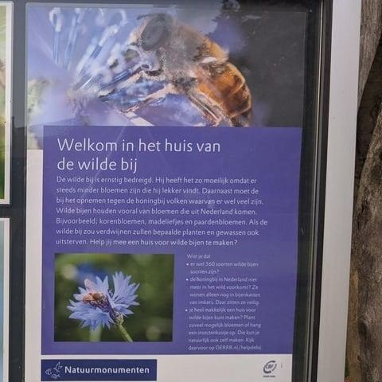

Blinde bij, geen wilde bij
1 november 2021 · Natuurmonumenten
- Op de foto
- Blinde bij (zweefvlieg)
- Het ging over
- Wilde bij

Een welbekende fout is weer opgedoken. De zweefvlieg/wildebij verwarring. Hier ook weer een Blinde bij (de zweefvlieg) in plaats van een mooi foto van één van de wilde bijen die nederland rijk is.
@natuurmonumenten dit is bij bezoekerscentrum veluwezoom 😉